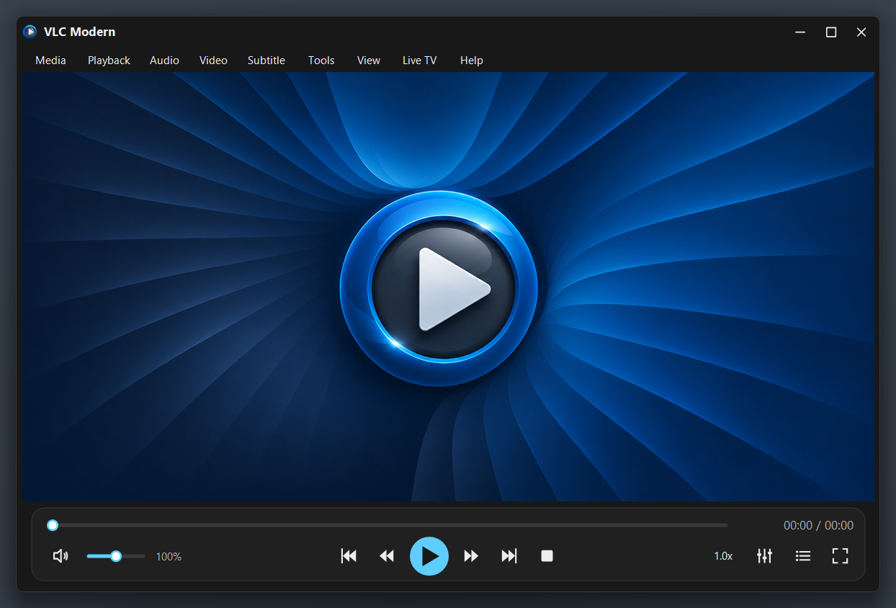
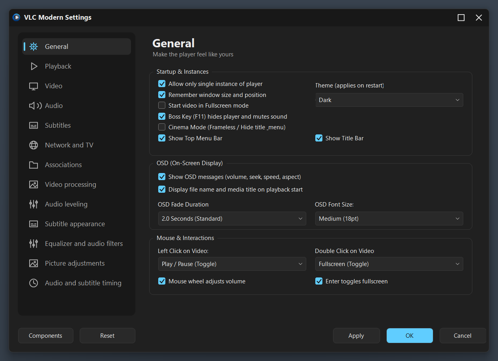
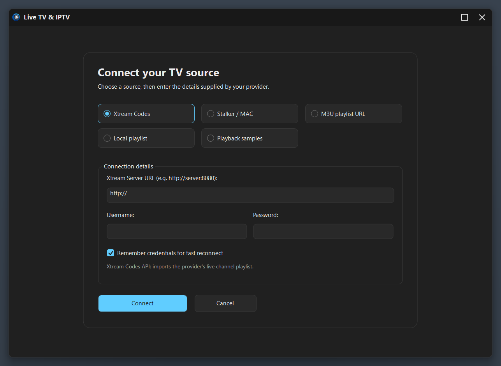
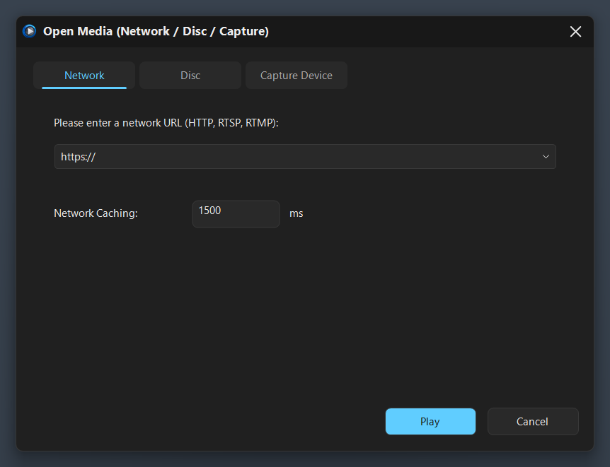
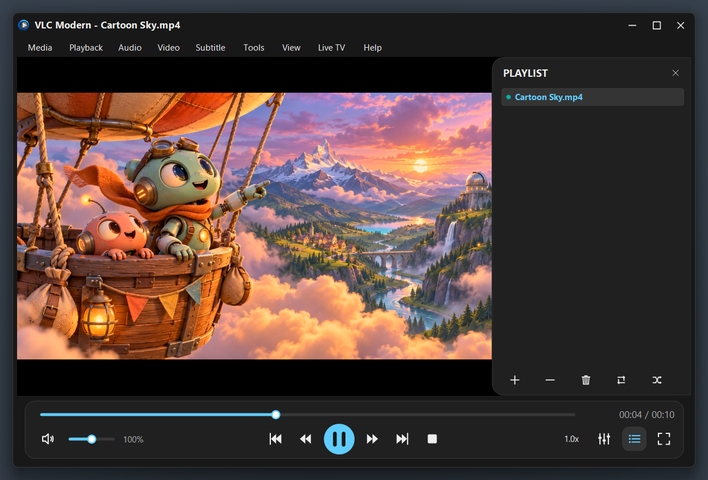
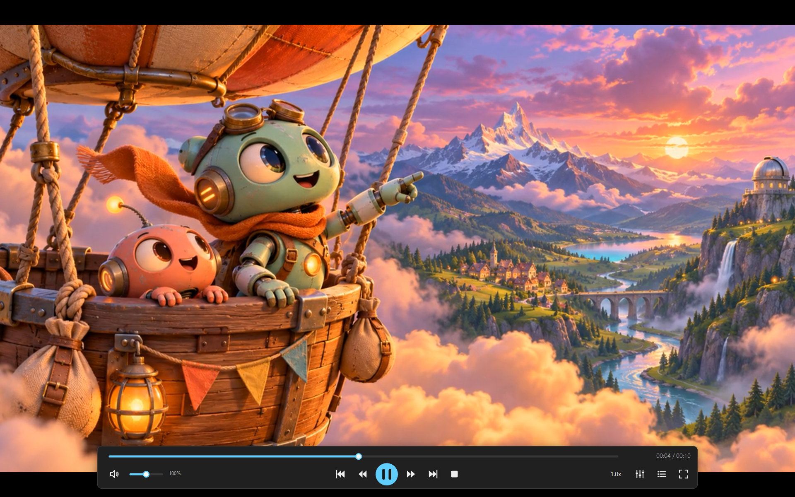
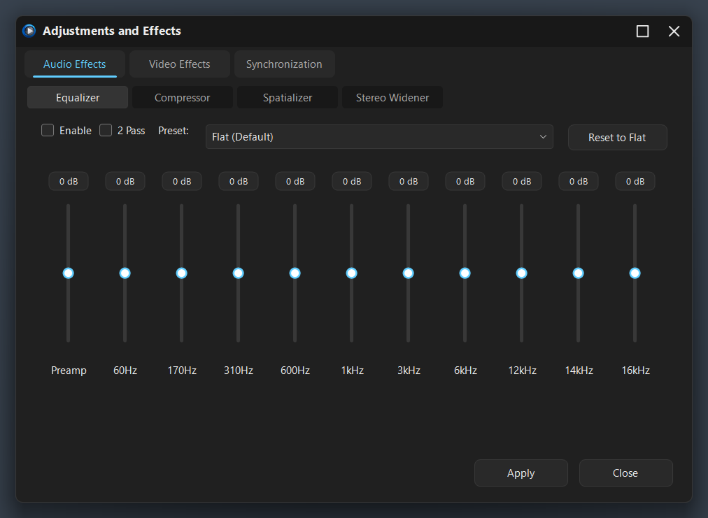
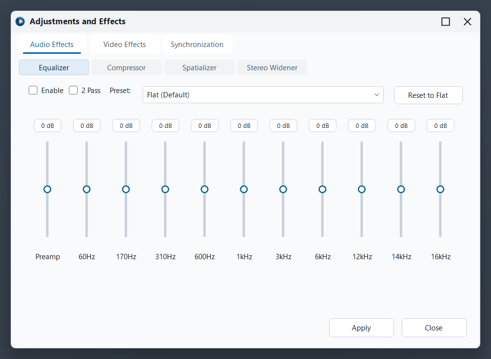

Play and organizeشغّل ونظّم
Keep a docked playlist, resume a video, preview the timeline, and use configurable keyboard shortcuts.استخدم قائمة تشغيل جانبية، واستأنف الفيديو، وعاين المشاهد من شريط التقدّم، وخصّص اختصارات الكيبورد.
Windows · v1.0.3ويندوز · v1.0.3
Play local video and music, open online streams, and connect your IPTV sources in a Windows player powered by LibVLC.شغّل الفيديو والموسيقى من جهازك، وافتح روابط البث ومصادر IPTV في مشغّل ويندوز يعمل بمحرك LibVLC.

Keep a docked playlist, resume a video, preview the timeline, and use configurable keyboard shortcuts.استخدم قائمة تشغيل جانبية، واستأنف الفيديو، وعاين المشاهد من شريط التقدّم، وخصّص اختصارات الكيبورد.
Connect your own Xtream Codes or Stalker provider, or load an M3U file or URL.أضف مزوّد Xtream Codes أو Stalker، أو افتح رابط أو ملف M3U.
Adjust audio with the equalizer, synchronize subtitles, convert media, and export precise MP4 clips with FFmpeg.اضبط الصوت بالإكولايزر، وزامن الترجمة، وحوّل الوسائط أو قصّ مقاطع MP4 بدقة باستخدام FFmpeg.
 Video playbackتشغيل الفيديو
Video playbackتشغيل الفيديو

Settings · Dark Modeالإعدادات · داكن Settings · Light Modeالإعدادات · فاتح
Settings · Light Modeالإعدادات · فاتح

IPTV sourcesمصادر IPTV
Network streamsبث الشبكة Media conversionتحويل الوسائط
Media conversionتحويل الوسائط

Docked playlistقائمة التشغيل الجانبية
Fullscreen controlsأدوات ملء الشاشة
Equalizer · Dark Modeالإكولايزر · داكن
Equalizer · Light Modeالإكولايزر · فاتح VLC Modern startup screenشاشة بداية VLC ModernRun an EXE to install in Program Files, or extract a Portable ZIP and launch VLCModern.exe.شغّل EXE للتثبيت في Program Files، أو فك ضغط النسخة المحمولة وشغّل VLCModern.exe.
Includes playback plugins and FFmpeg for precise MP4 clipping on 64-bit Windows.تشمل إضافات التشغيل وFFmpeg للقص الدقيق على ويندوز 64 بت.
Play common local files offline. Add the full plugins and FFmpeg during setup or from Settings → Components.شغّل الملفات المحلية الشائعة بدون إنترنت. نزّل مجموعة الإضافات الكاملة وFFmpeg أثناء التثبيت أو من الإعدادات ← Components.
Both editions include portable Node.js for YouTube on 64-bit Windows.النسختين فيهما Node.js محمول لتشغيل YouTube على ويندوز 64 بت.